865 数据结构与程序设计
865 数据结构与程序设计
第一章 概论
1. 数据结构的基本概念与术语
基本概念
- 数据
- 数据元素、数据项
- 数据对象、数据结构
- 数据类型、抽线数据类型（ADT）
三要素
逻辑结构
集合
线性结构
- 一对一
树形结构
- 一对多
图结构（网状结构）
- 多对多
数据的运算
- 结构逻辑结构、实际需求来定义基本运算
物理结构（存储结构）
- 顺序存储
- 链式存储
- 索引存储
- 散列存储
2. 算法与算法分析
算法的基本概念
什么是算法
程序=数据结构+算法
- 数据结构是要处理的信息
- 算法是处理信息的步骤
算法的五个特性
有穷性
有穷时间内能执行完
- 算法是有穷的
- 程序可以是无穷的
确定性
- 相同输入只会产生相同输出
可行性
- 可以用已有的基本操作实现算法
输入
- 丢给算法处理的数据
输出
- 算法处理的结果
“好”算法的特质
正确性
可读性
健壮性
高效率与低存储量需求
- 即算法执行省时、省内存
- 时间复杂度低、空间复杂度低
时间复杂度
如何计算
- ① 找到一个基本操作（最深层循环）
- ② 分析该基本操作的执行次数 x 与问题规模 n 的关系 x=f(n)
- ③x 的数量级 O(x)就是算法时间复杂度 T(n)
常用技巧
- 加法规则：
- 乘法规则：
三种复杂度
- 最坏时间复杂度：考虑输入数据“最坏”的情况
- 平均时间复杂度：考虑所有输入数据都等概率出现的情况
- 最好时间复杂度：考虑输入数据“最好”的情况
空间复杂度
如何计算
普通程序
- ① 找到所占空间大小与问题规模相关的变量
- ② 分析所占看见 x 与问题规模 n 的关系 x=f(n)
- ③x 的数量级 O(x)就是算法空间复杂度 S(n)
递归程序
- ① 找到递归调用的深度 x 与问题规模 n 的关系 x=f(n)
- ②x 的数量级 O(x)就算算法空间复杂度 S(n)
- 注：有的算法各层函数所需存储空间不同，分析方法略有区别
常用技巧
- 加法规则：
- 乘法规则：
第二章 线性表及其顺序存储
1. 线性表
定义
值得注意的特性
- 数据元素同类型、有限、有序
重要术语
- 表长、空表
- 表头、表尾
- 前驱、后继
- 数据元素的位序（从 1 开始） 用数组实现线性表时需要注意审题
基本操作
创销、增删改查（所有数据结构适用的记忆思路）
判空、判长、打印输出（还可自己根据实际需求增加其他基本操作）
其他值得注意的点
- 理解什么时候要传入参数的引用“&”
- 函数命名要有可读性
2. 顺序表及其应用
定义
存储结构
- 逻辑上相邻的数据元素物理上也相邻
实现方式
静态分配
- 使用“静态数组”实现
- 大小一旦确定就无法改变
动态分配
- 使用“动态数组实现”
- L.data = (ElemType ) malloc (sizeof(ElemType) size);
- 顺序表存满时，可再用 malloc 动态拓展顺序表的最大容量
- 需要将数据元素复制到新的存储区域，并用 free 函数释放原区域
特点
随机访问
- 能在 O(1)时间内找到第 i 个元素
存储密度高
拓展容量不方便
插入、删除数据元素不方便
基本操作
插入
ListInsert(&L,i,e)
- 将元素 e 拆入到 L 的第 i 个位置
插入位置之后的元素都要后移
时间复杂度
- 最好 O(1)、最坏 O(n)、平均 O(n)
删除
ListDelete(&L,i,&e)
- 将 L 的第 i 个元素删除，并用 e 返回
删除位置之后的元素都要前移
时间复杂度
- 最好 O(1)、最坏 O(n)、平均 O(n)
代码要点
- 代码中注意位序 i 和数组下标的区别
- 算法要有健壮性，注意判断 i 的合法性
- 分析代码，理解为什么有的参数需要加“&”引用
3. 栈的概念及其应用
定义
- 一种操作受限的线性表，只能在栈顶插入、删除
- 特性：后进先出（LIFO）
- 术语：栈顶、栈底、空栈
基本操作
- 创、销
- 增、删（元素进栈、出栈，只能在栈顶操作）
- 查（获得栈顶元素，但不删除）
- 判空
顺序栈
顺序存储，用静态数组实现，并需要记录栈顶指针
基本操作
- 创、增、删、查（都是 O(1)时间复杂度）
两种实现
初始化时 top=-1
入栈
- S.data[++S.top]=x;
出栈
- x=S.data[S.top--];
获得栈顶元素
- x=S.data[S.top];
栈空/栈满条件是？
初始化时 top=0
入栈
- S.data[S.top++]=x;
出栈
- x=S.data[--S.top];
获得栈顶元素
- x=S.data[S.top-1];
栈空/栈满条件是？
共享栈
两个栈共享同一片内存空间，两个栈从两边往中间增长
初始化
- 0 号栈栈顶指针初始时 top0=-1; 1 号栈栈顶指针初始时 top1=MaxSize;
栈满条件
- top0+1==top1;
应用
栈在括号匹配中的应用
- 依次扫描所有字符，遇到左括号入栈，遇到右括号则弹出栈顶元素检查是否匹配
栈在表达式求值问题中的应用 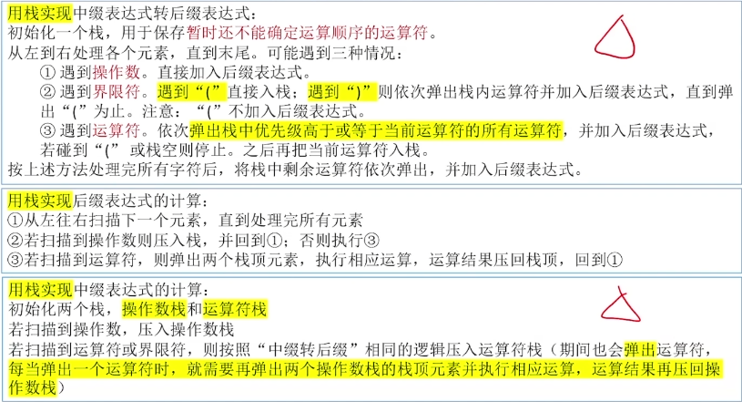
概念
- 运算符、操作数、界限符（DIY 概念：左操作数/右操作数）
三种表达式
中缀表达式
- 运算符在操作数中间
后缀表达式（逆波兰式）
- 运算符在操作数后面
前缀表达式（波兰式）
- 运算符在操作数前面
后缀表达式考点
中缀转后缀
- ① 按”左优先“原则确定运算符的运算次序
- ② 根据 ① 中确定的次序，依次将各个运算符和与之相邻的两个操作数按<左操作数 右操作数 运算符>的规则合体
后缀转中缀
- 从左往右扫描，每遇到一个运算符，就将<左操作数 右操作数 运算符>变为（左操作数 运算符 右操作数）的形式
计算
- 从左往右扫描，遇到操作数入栈，遇到运算符则弹出两个栈顶元素运算后入栈（注意：先弹出的元素是”右操作数“）
前缀表达式
中缀转前缀
- ① 按”右优先“原则确定运算符的运算次序
- ② 根据 ① 中确定的次序，依次将各个运算符和与之相邻的两个操作数按<运算符 左操作数 右操作数>的规则合体
计算
- 从右往左扫描，遇到操作数入栈，遇到运算符则弹出两个栈顶元素运算后入栈（注意：先弹出的元素是”左操作数“）
栈在递归中的应用 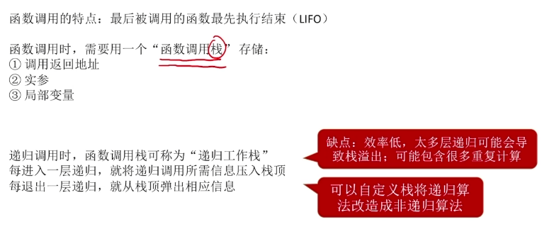
4. 队列的概念及其应用
定义
- 一种操作受限的线性表，只能在队尾插入、在队头删除
- 特性：先进先出（FIFO）
- 术语：队头、队尾、空队列、队头元素、队尾元素
基本操作
- 创、销
- 增、删（入队、出队，只能在规定的一端进行）
- 查（获得队头元素，但不删除）
- 判空
顺序队列
实现思想
- 用静态数组存放数据元素，设置队头/队尾（front/rear）指针
- 循环队列：用模运算（取余）将存储空间在逻辑上变为“环状”
- Q.rear=(Q.rear+1)%MaxSize
重要考点
- 如何初始化、入队、出队
- 如何判空、判满
- 如何计算队列的长度
分析思路
确定 front、rear 指针的指向
- ①rear 指向队尾元素后一个位置
- ②rear 指向队尾元素
确定判空、判满的方法
- 牺牲一个存储单元
- 增加 size 遍历记录队列长度
- c, 增加 tag=0/1 用于标记最近的一次操作是出队/入队
队列的变种
双端队列
- 允许从两端插入、两端删除的队列
输入受限的双端队列
- 允许从两端删除、从一端插入的队列
输出受限的双端队列
- 允许从两端插入、从一端删除的队列
考点：对输出序列合法性的判断
队列在操作系统中的应用 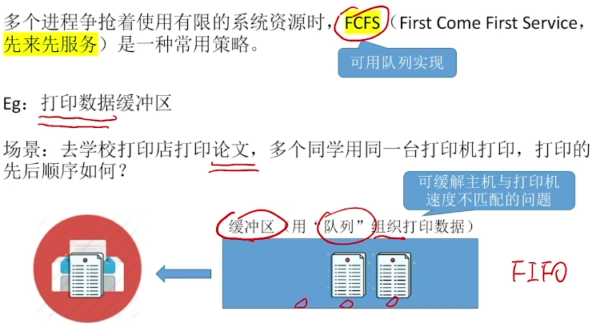
第三章 线性表及其链式存储
1. 链式存储
2. 单链表
定义
单链表
- 用“链式存储”（存储结构）实现了“线性结构”（逻辑结构）
- 一个结点存储一个数据元素
- 各结点间的先后关系用一个指针表示
用代码定义一个单链表
两种实现
不带头结点
- 空表判断：L==NULL。写代码不方便
带头结点
- 空表判断：L->next==NULL。写代码更方便
其他值得注意的点
- typedef 关键字的用法
- “LinkList”等价于“LNode *” 前者强调这是链表，后者强调这是结点 合适的地方使用合适的名字，代码可读性更高
基本操作
插入
按位序插入
- 不带头结点
- 带头结点
指定结点的后插操作
指定结点的前插操作
删除
- 按位序删除
- 指定结点的删除
建立
头插法
- 重要应用：链表的逆置
尾插法
3. 带头结点的单链表及其应用
4. 循环单链表与双链表
双链表
初始化
- 头结点的 prior、next 都指向 NULL
插入（后插）
- 注意新插入结点、前驱结点、后继结点的指针修改
- 边界情况：新插入结点再最后一个位置，需特殊处理
删除（后删）
- 注意删除结点的前驱结点、后继结点的指针修改
- 边界情况：如果被删除的结点是最后一个数据结点，需特殊处理
遍历
- 从一个给定结点开始，后向遍历、前向遍历的实现（循环的终止条件）
- 链表不具备随机存取特性，查找操作只能通过顺序遍历实现
循环单链表
- 空表
- 非空表
循环双链表
- 空表
- 非空表
代码问题
- 如何判空
- 如何判断结点 p 是否是表尾/表头结点
- 如何在表头、表中、表尾插入/删除一个结点
5. 链式栈与链式队列
链式栈
用链式存储方式实现的栈
两种实现方式
- 带头结点
- 不带头结点（推荐）
重要基本操作
- 创（初始化）
- 增（进栈）
- 删（出栈）
- 查（获取栈顶元素）
- 如何判空、判满？
链式队列
用链式存储实现队列
- 带头结点
- 不带头结点
基本操作
创（初始化）
增（入队）
- 注意第一个元素入队
删（出队）
- 注意最后一个元素出队
查（获取队头元素）
判空
判满？不存在的
第四章 字符串、数据与特殊矩阵
1. 字符串及模式匹配
串
定义
- 串，即字符串（String）是由零个或多个字符组成的有限序列
- 术语：串长、空串、空格串、子串、主串、字符在主串中的位置、子串在主串中的位置
串 vs 线性表
- 串的数据对象限定为字符集
- 串的基本操作大多以”子串“为操作对象
基本操作
- Index(S,T)，定位操作，找到串 T 在主串 S 中的位置
- StrCompare(S,T)：比较操作。若 S>T，则返回值>0；若 S=T，则返回值=0；若 S<T，则返回值<0。
- 其他…
字符集编码
- 每个字符在计算机中对应一个二进制数，比较字符的大小其实就是比较二进制数的大小。
串的存储结构
顺序存储
静态数组
动态数组
- malloc、free
链式存储
- 可让每个结点存多个字符，没有字符的位置用'#'或'\0'补足
王道教材采用——静态数组
基本操作的实现
- 求子串：bool SubString(SString &Sub,SString S,int pos,int len)
- 串的比较：int StrCompare(SString S,SString T)
- 求串在主串中的位置：int Index(SString S,SString T)
朴素模式匹配算法
算法思想
- 主串长度 n，模式串长度 m
- 将主串中所有长度为 m 的子串与模式串对比
- 找到第一个与模式串匹配的子串，并返回子串起始位置
- 若所有子串都不匹配，则返回 0
最坏时间复杂度=O(mn)
KMP 算法 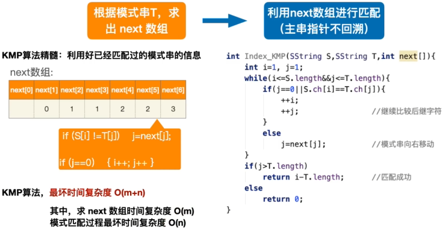
精髓：利用好已经匹配过的模式串的信息
最坏时间复杂度：O(m+n) 其中，求 next 数组时间复杂度 O(m) 模式匹配过程最坏时间复杂度 O(n)
求 next 数组 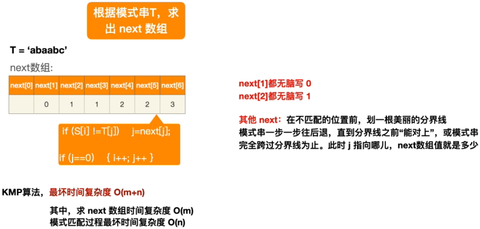
next 数组优化——nextval 数组
- 当前元素和 next[j]的元素比较 一样就是用 下标为 next[j]元素的 nextval[j]的值 不一样就用当前的 next[j]的值
2. 特殊矩阵的压缩存储
对称矩阵
- 特点：对方阵中的任意一个元素，有 ai,j=aj,i
- 压缩：只存储主对角线和下三角区（或主对角线+上三角区）
三角矩阵
- 特点：上三角区全为常量（下三角矩阵）；或下三角区全为常量（上三角矩阵）
- 压缩：按行优先/列优先规则依次存储非常量区域，并在最后一个位置存放常量 c
三对角矩阵（带状矩阵）
- 特点：当|i-j|>1 时，有 ai,j=0(1<=i,j<=n)
- 压缩：按行优先/列优先规则依次存储带状区域
3. 稀疏矩阵
非零元素个数远小于零元素个数
压缩：只存储非零元素
- 顺序存储：顺序存储三元组，<行，列，值>
- 链式存储：十字链表法
第五章 递归
1. 递归的基本概念与递归程序设计
- 递归是一种编程技术，它允许函数调用自身来解决问题。这种方法的基本思想是将一个大问题分解为更小的子问题，然后使用相同的解决方案来解决这些子问题。
- 递归函数通常有两个主要部分：基本情况（base case）和递归情况（recursive case）。基本情况是函数处理的最小问题，可以直接解决，不需要进一步的递归调用。递归情况则是将问题分解为更小的子问题，并对这些子问题进行递归调用。
- 例如，计算阶乘的函数就是一个典型的递归函数。阶乘函数的基本情况是 0! = 1，递归情况是 n! = n * (n-1)!。在这个例子中，我们可以看到，递归情况将问题（计算 n 的阶乘）分解为一个更小的问题（计算(n-1)的阶乘），并对这个更小的问题进行递归调用。
2. 递归程序设计执行过程的分析
- 理解递归程序的执行过程需要理解递归调用栈。每次函数调用自身时，系统都会在内存中为该函数调用创建一个新的环境。这个环境包含了函数的参数和局部变量。当函数返回时，它的环境被弹出调用栈，并且控制权返回到调用它的函数。
例如，我们来看一下计算阶乘的递归函数的执行过程。假设我们要计算 5!，那么函数调用栈将如下所示：
首先，我们调用 factorial(5)。因为 5 不等于 0，所以我们进入递归情况，计算 5 _ factorial(4)。 然后，我们调用 factorial(4)。因为 4 不等于 0，所以我们进入递归情况，计算 4 _ factorial(3)。 我们继续这个过程，直到我们调用 factorial(0)。因为 0 等于 0，所以我们进入基本情况，返回 1。 然后，每个递归调用开始返回。factorial(1)返回 1 _ 1 = 1，factorial(2)返回 2 _ 1 = 2，factorial(3)返回 3 _ 2 = 6，依此类推。 最后，factorial(5)返回 5 _ 24 = 120。 通过这个过程，我们可以看到递归是如何通过将问题分解为更小的子问题，并对这些子问题进行递归调用来解决问题的。同时，我们也可以看到递归调用栈是如何在内存中创建和管理的。
3. 递归程序到非递归程序的转换
- 递归到非递归的转换是一种常见的编程技术，主要用于优化程序的时间和空间效率。虽然递归在解决某些问题时非常直观和优雅，但是它也可能导致额外的时间和空间开销，特别是在处理大规模数据或深度递归时。因此，有时我们需要将递归程序转换为非递归程序。
转换过程通常涉及到使用循环（如 while 或 for 循环）和数据结构（如堆栈）来显式地模拟递归调用栈。这是因为在递归中，函数调用自身时，会在内存中创建一个新的环境（包含函数的参数和局部变量），这个环境被称为一个栈帧。所有的栈帧都被存储在一个叫做调用栈的数据结构中。当函数返回时，它的栈帧被从调用栈中弹出，并且控制权返回到调用它的函数。
例如，我们可以将计算阶乘的递归函数转换为非递归函数。在递归版本中，我们通过连续地调用函数自身并乘以当前的数字来计算阶乘。而在非递归版本中，我们可以使用一个 for 循环来迭代从 1 到 n 的所有数字，并将它们相乘以计算阶乘。
以下是一个使用 C 语言编写的非递归阶乘函数的示例：
1 | |
需要注意的是，并不是所有的递归问题都能轻易地转换为非递归形式。有些问题（如树的遍历、图的搜索等）的非递归解决方案可能会更复杂，更难以理解和实现。此外，有些问题可能需要使用特定的数据结构（如队列或堆栈）来辅助非递归解决方案。
希望这个解释对你有所帮助！
第六章 树
1. 树的概念
基本概念
- 结点、边、根节点、叶子结点、分支节点、子树
基本术语
结点之间的关系
- 父节点（双亲结点）、孩子结点
- 祖先结点、子孙结点
- 兄弟结点、堂兄弟结点
- 结点之间的路径——只能从上往下
- 路径长度——路径上经过多少条边
结点、树的属性
结点的层次（深度）、结点的高度
树的深度（高度）
🚩 结点的度
- 结点的分支数
🚩 树的度
- 树中各结点的度的最大值
有序树 VS 无序树
- 逻辑上看，各子树是否有序，位置是否可互换
森林
- 由 m(m>=0)个互不相交的树组成森林
常考性质
考点 1
- 结点数=总度数+1
考点 2
🚩 度为 m 的树
- 至少有一个结点度 = m
- 一定是非空树
🚩m 叉树
- 允许所有结点的度都<m
- 可以是空树
考点 3
- 度为 m 的树第 i 层至多有几个结点?
考点 4
- 高度为 h 的 m 叉树至多有几个结点?
考点 5
- 🚩 高度为 h 的 m 叉树至少有多少个结点?
- 🚩 高度为 h、度为 m 的树至少有多少个结点?
考点 6
- 具有 n 个结点的 m 叉树的最小高度为?
2. 树的存储结构
双亲表示法
- 顺序存储结点数据，结点中保存父节点在数组中的下标
- 优点：找父节点方便；缺点：找孩子不方便
孩子表示法
- 顺序存储结点数据，结点中保存孩子链表头指针（顺序+链式存储）
- 优点：找孩子方便；缺点：找父节点不方便
孩子兄弟表示法
- 用二叉链表存储树——左孩子右兄弟
- 孩子兄弟表示法存储的树，从存储视角来看形态上和二叉树类似
- 考点：树与二叉树的相互转换。本质就是用孩子兄弟表示法存储树
3. 树的遍历
树的遍历
- 先根遍历 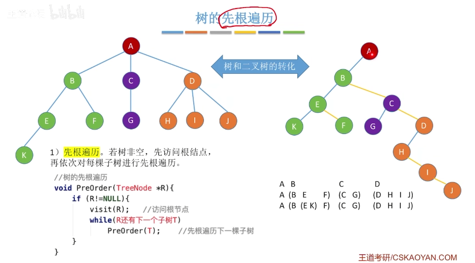
- 后根遍历 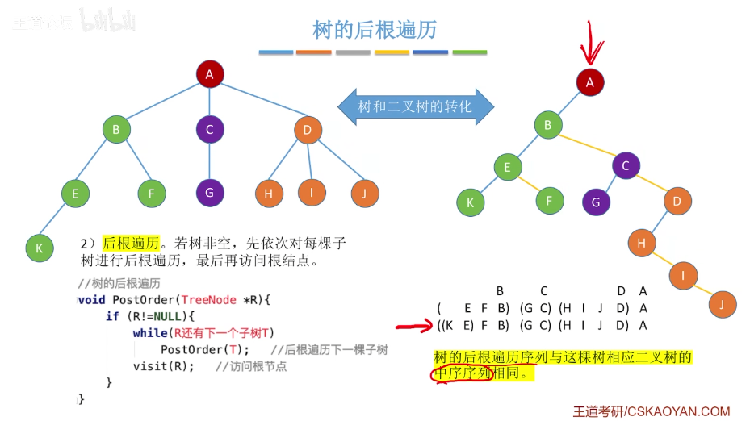
- 层序遍历 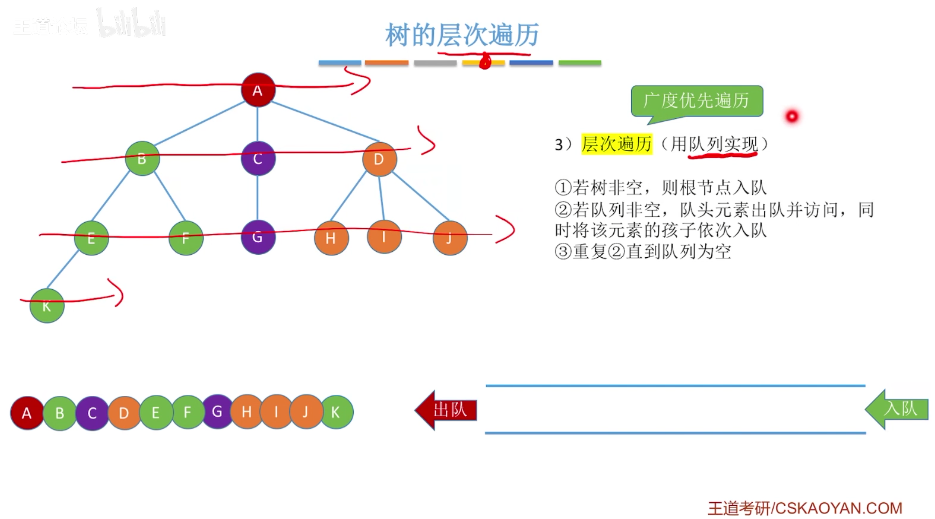
森林的遍历
- 先序遍历 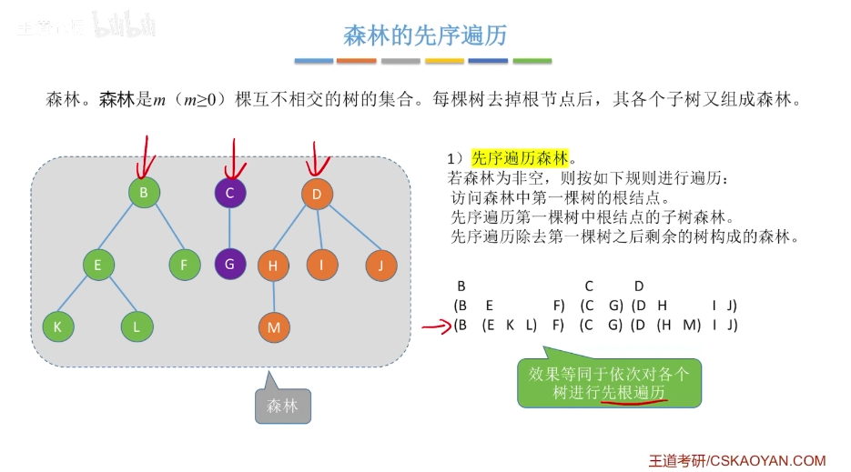
- 中序遍历 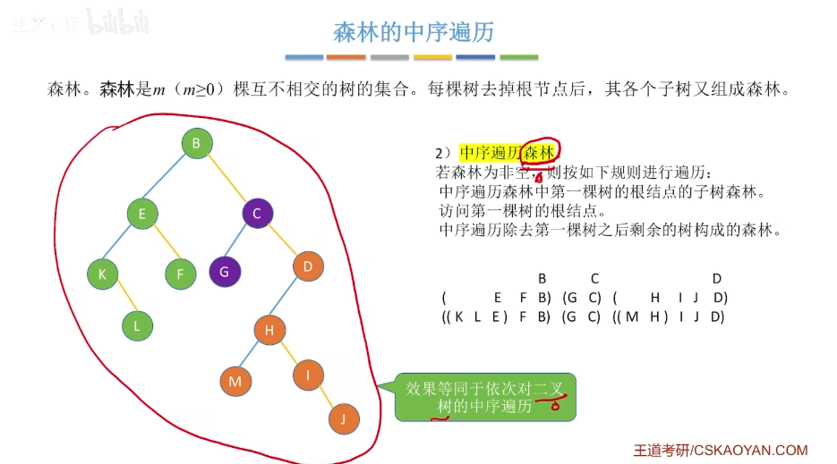
第七章 二叉树
1. 二叉树的基本概念
基本概念
- 可为空二叉树
- 任意结点的度<2
- 是有序树，左子树、右子树不可颠倒
- 思考：二叉树 V.S 度为 2 的有序树
特殊二叉树
满二叉树
- 高度为 h，含有 2^h- 1 个结点的二叉树
完全二叉树
- 在满二叉树的基础上可去掉若干个编号更大的结点
二叉排序树
- 左子树关键字<根节点关键字<右子树关键字
平衡二叉树
- 左右子树深度差不超过 1
常见考点
具有 n 个(n>0) 结点的完全二叉树的高度 h 为
高为 h 的满二叉树共有 2^h-1 个结点 高为 h-1 的满二叉树共有 2^(h-1)-1 个结点
对完全二叉树，可以由结点数 n 推出度为 0、1 和 2 的结点个数为
完全二叉树最多只有一个度为 1 的结点，即
- 若完全二叉树有 2k 个（偶数）个结点，则必有
- 若完全二叉树有 2k-1 个（奇数）个结点，则必有
2. 二叉树的存储结构
顺序存储：存放先序遍历序列在数组之中
几个重要常考的基本操作
- i 的左孩子——2i
- i 的右孩子——2i+1
- i 的父节点——[I/2]
- i 所在的层次——
若完全二叉树中共有 n 个结点，则
- 判断 i 是否有左孩子?
- 判断 i 是否有右孩子?
- 判断 i 是否是叶子/分支结点?
链式存储：一个数据变量+两个指针
- n 个结点的二叉链表共有 n+1 个空链域
3. 二叉树的遍历（递归与非递归）
三种方法
先序遍历
- 根、左、右
中序遍历
- 左、根、右
后序遍历
- 左、右、根
遍历算数表达式树
- 先序遍历得前缀表达式
- 中序遍历得中缀表达式（没有括号）
- 后序遍历得后缀表达式
考点：求遍历序列
分支结点逐层展开法...
从你的全世界路过法
- 先序一一第一次路过时访问
- 中序——第二次路过时访问
- 后序——第三次路过时访问
层序遍历
- ① 初始化一个辅助队列
- ② 根结点入队
- ③ 若队列非空，则队头结点出队，访问该结点，并将其左、右孩子插入队尾（如果有的话）
由二叉树的遍历序列构造二叉树 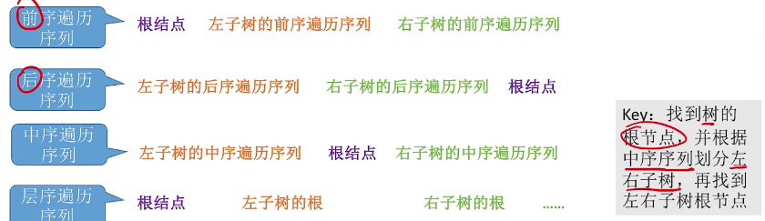
- 前序+中序遍历序列
- 后序+中序遍历序列
- 层序+中序遍历序列
4. 穿线二叉树的基本概念与构造
作用：方便从一个指定结点出发，找到其前驱、后继；方便遍历
存储结构
- 在普通二叉树结点的基础上，增加两个标志位 ltag 和 rtag
- ltag=1 时，表示 lchild 指向前驱；ltag==0 时，表示 lchild 指向左孩子
- rtag==1 时，表示 rchild 指向后继；rtag==0 时，表示 rchild 指向右孩子
三种线索二叉树
中序线索二叉树
- 以中序遍历序列为依据进行”线索化“
先序线索二叉树
- 以先序遍历序列为依据进行”线索化“
后序线索二叉树
- 以后序遍历序列为依据进行”线索化“
几个概念
线索
- 指向前驱/后继的指针称为线索
中序前驱/中序后继；先序前驱/先序后继；后序前驱/后序后继
⚠ 手算画出线索二叉树
- ① 确定线索二叉树类型-中序、先序、or 后序？
- ② 按照对应遍历规则，确定各个结点的访问顺序，并写上编号
- ③ 将 n+1 个空链域连上前驱、后继
二叉树线索化
中序线索化
- 得到中序线索二叉树
先序线索化
- 得到先序线索二叉树
后序线索化
- 得到后序线索二叉树
核心
- 中序/先序/后序遍历算法的改造，当访问一个结点时，连接该结点与前驱结点的线索信息
- 用一个指针 pre 记录当前访问结点的前驱结点
易错点
- 最后一个结点的 rchild 、rtag 的处理
- 先序线索化中，注意处理爱滴魔力转圈圈问题，当 ltag==0 时，才能对左子树先序线索化
高频考点
线索化
- ⚠ 手算
- 代码
⚠ 找前驱、找后继
5. 树、森林和二叉树的转换
森林与二叉树的转换 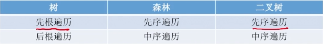
- 本质：用二叉链表存储森林——左孩子右兄弟
- 森林中各个树的根节点之间视为兄弟关系
第八章 图
1. 图的基本概念
定义：G=(V,E)，顶点集 V，边集 E
无向图 （无向边/边）、有向图 （有向边/弧）
顶点的度、出度、入度 （无向图? 有向图？）
边的权、带权图/网
点到点的关系
- 路径、回路、简单路径、简单回路
- 路径长度
- 点到点的距离（最短路径）
- 无向图顶点的连通性、连通图
- 有向图顶点的强连通性、强连通图
图的局部
- 子图
- 连通分量一一极大连通子图
- 强连通分量——极大强连通子图
- 连通无向图的生成树——包含全部顶点的极小连通子图非
- 连通无向图的生成森林一一各连通分量的生成树
几种特殊形态的图
- 完全图
- 稠密图、稀疏图
- 树、森林、有向树
基本操作 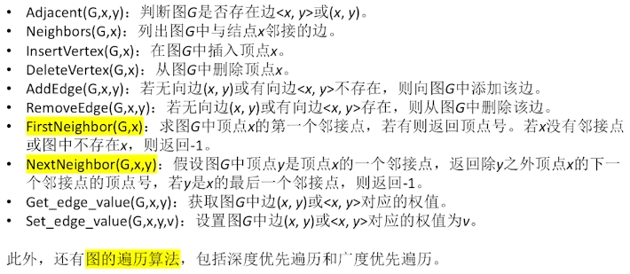
2. 图的存储结构（邻接矩阵法、邻接表法）
3. 图的遍历
BFS
类似于树的层序遍历（广度优先遍历）
算法要点
- 需要一个辅助队列
- 如何从一个结点找到与之邻接的其他顶点
- visited 数组防止重复访问
- 如何处理非连通图
复杂度
空间复杂度:O(IVI)——辅助队列
时间复杂度
- 访问结点的时间+访问所有边的时间
- 邻接矩阵：O(IVI^2)
- 邻接表：O(|V|+|E|)
DFS
算法要点
- 递归地深入探索未被访问过的邻接点（类似于树的先根遍历的实现）
- 如何从一个结点找到与之邻接的其他顶点
- visited 数组防止重复访问
- 如何处理非连通图
复杂度分析
空间复杂度: O(IV|)——来自递归工作栈
时间复杂度
- 访问结点的时间+访问所有边的时间
- 邻接矩阵：O(IVI^2)
- 邻接表：O(IV|+|E|)
图的遍历和图的连通性
无向图
- DFS/BFS 函数调用次数=连通分量数
有向图
- 若从起始顶点到其他顶点都有路径，则只需调用 1 次 DFS/BFS 函数
- 对于强连通图，从任一顶点出发都只需调用 1 次 DFS/BFS 函数
4. 生成树与最小生成树
广度优先生成树
- 由广度优先遍历确定的树
- 邻接表存储的图表示方式不唯一，遍历序列、生成树也不唯一
- 遍历非连通图可得广度优先生成森林
深度优先生成树
- 由深度优先遍历确定的树
- 邻接表存储的图表示方式不唯一，深度优先遍历序列、生成树也不唯一
- 深度优先遍历非连通图可得深度优先生成森林
最小生成树 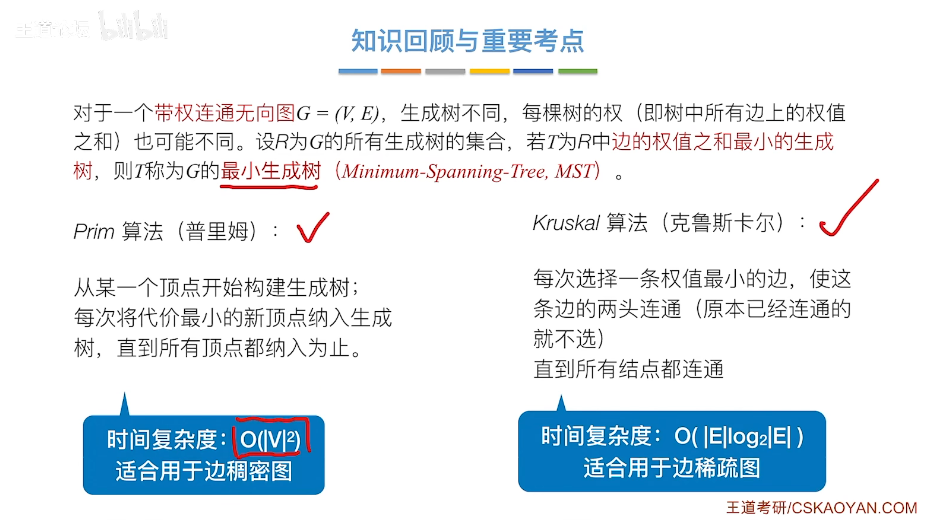
最小生成树的概念
- 边的权值之和最小的生成树
Prim 算法
- 从某一个顶点开始构建生成树；每次将代价最小的新顶点纳入生成树，直到所有顶点都纳入为止。
Kruskal 算法
- 每次选择一条权值最小的边，使这条边的两头连通(原本已经连通的就不选)
- 直到所有结点都连通
5. 最短路径
单源最短路径
- BFS 算法(无权图) 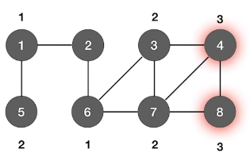
- Dijkstra 算法(带权图、无权图)——不适用于有负权值的带权图 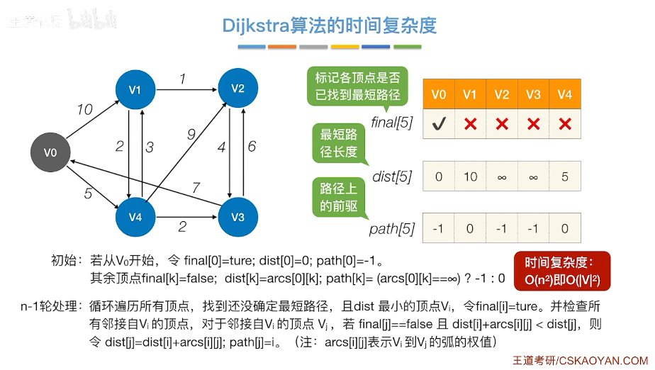
各顶点间的最短路径
- Floyd 算法 (带权图、无权图)——不能解决带有“负权回路”的图（有负权值的边组成回路），这种图困难没有最短路径 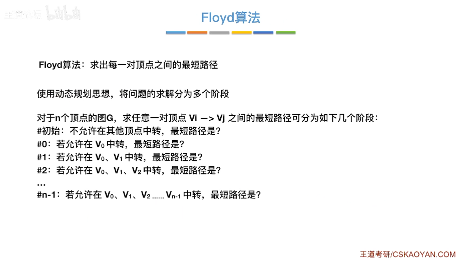
6. 拓扑排序
AOV 网
- 顶点代表活动，有向边<Vi,vj>表示活动 Vi 必须先于 Vj 进行
- AOV 网一定是 DAG 图，不能有环
拓扑排序
- ① 从 AOV 网中选择一个没有前驱（入度为 0）的顶点并输出
- ② 从网中删除该顶点和所有以它为起点的有向边
- ③ 重复 ① 和 ② 直到当前的 AOV 网为空
逆拓扑排序
- ① 从 AOV 网中选择一个没有后继（出度为 0）的顶点并输出
- ② 从网中删除该顶点和所有以它为终点的有向边
- ③ 重复 ① 和 ② 直到当前的 AOV 网为空
另一种实现方式：用 DFS 实现拓扑排序/逆拓扑排序
性质
- 拓扑排序、逆拓扑排序序列可能不唯一
- 若图中有环，则不存在拓扑排序序列/逆拓扑排序序列
7. 关键路径
AOE 网
在带权有向图中，以顶点表示事件，以有向边表示活动，以边上的权值表示完成该活动的开销
相关概念
- 在 AOE 网中仅有一个入度为 0 的顶点，称为开始顶点（源点），它表示整个工程的开始:
- 也仅有一个出度为 0 的顶点，称为结束顶点（汇点），它表示整个工程的结束。
- 从源点到汇点的有向路径可能有多条，所有路径中，具有最大路径长度的路径称为关键路径，而把关键路径上的活动称为关键活动
求解方法
① 求所有事件的最早发生时间 ve()
② 求所有事件的最迟发生时间 vl()
③ 求所有活动的最早发生时间 e()
④ 求所有活动的最迟发生时间 I()
⑤ 求所有活动的时间余量 d()
- d(i)=0 的活动就是关键活动由关键活动可得关键路径
特性
- 若关键活动耗时增加，则整个工程的工期将增长
- 缩短关键活动的时间，可以缩短整个工程的工期
- 当缩短到一定程度时，关键活动可能会变成非关键活动
- 可能有多条关键路径，只提高一条关键路径上的关键活动速度并不能缩短整个工程的工期，只有加快那些包括在所有关键路径上的关键活动才能达到缩短工期的目的。
有向无环图描述表达式
- Step 1:把各个操作数不重复地排成一排
- step 2:标出各个运算符的生效顺序 (先后顺序有点出入无所谓)
- Step 3:按顺序加入运算符，注意“分层
- Step 4:从底向上逐层检查同层的运算符是否可以合体
第九章 检索
1. 检索的基本概念
基本概念
查找
- 找到符合条件的数据元素（记录）
查找表
由同一类型的数据元素（记录）组成
静态查找表
- 只需要查找操作
动态查找表
- 除了查找，还需要增/删数据元素
关键字
- 唯一标识数据元素的数据项
查找算法的效率评价
- 平均查找长度 ASL
- 通常考虑查找成功、查找失败两种情况下的 ASL
2. 线性表的检索
顺序表的查找
按位查找
GetElem(L,i)
- 获取表 L 中第 i 个位置的元素的值
- 用数组下标即可得到第 i 个元素 L.data[i-1]
时间复杂度
- 最好/最坏/平均时间复杂度都是 O(1)
按值查找
LocateElem(L,e)
- 在顺序表 L 中查找第一个元素值等于 e 的元素，并返回其位序
- 从第一个元素开始依次往后检索
时间复杂度
- 最好 O(1)：目标元素再第一个位置
- 最坏 O(n)：目标元素再最后一个位置
- 平均 O(n)：目标元素再每个位置的概率相同
单链表的查找
按位查找
- 注意与“顺序表”对比
- 单链表不具备“随机访问”的特性，只能依次扫描
按值查找
key
- 三种基本操作的时间复杂度都是 O(n)
- 如何写循环扫描各个结点的代码逻辑
- 注意边界条件的处理
3. 二叉排序树
二叉排序树的定义
- ⚠ 左子树结点值 <根结点值<右子树结点值
- 默认不允许两个结点的关键字相同
查找操作
- 从根节点开始，目标值更小往左找，目标值更大往右找
插入操作
- 找到应该插入的位置(一定是叶子结点)，一定要注意修改其父节点指针
⚠ 删除操作
① 被删结点为叶子，直接删除
② 被删结点只有左或只有右子树，用其子树顶替其位置
③ 被删结点有左、右子树
- 可用其后继结点顶替，再删除后继结点
- 或用其前驱结点顶替，再删除前驱结点
- 前驱:左子树中最右下的结点
- 后继:右子树中最左下的结点
查找效率分析
取决于树的高度，最好 o(log n)，最坏 O(n)
⚠ 平均查找长度的计算
- 查找成功的情况
- 查找失败的情况（需补充失败结点）
4. 平衡二叉排序树
定义
- 树上任一结点的左子树和右子树的高度之差不超过 1
- 结点的平衡因子=左子树高-右子树高
插入操作
- 和二叉排序树一样，找合适的位置插入
- 新插入的结点可能导致其祖先们平衡因子改变，导致失衡
删除操作
① 删除结点（方法同二叉排序树）
- 若删除的结点是叶子，直接删。
- 若删除的结点只有一个子树，用子树顶替删除位置。
- 若删除的结点有两棵子树，用前驱（或后继）结点顶替，并转换为对前驱（或后）结点的删除。
② 一路向北找到最小不平衡子树，找不到就完结撒花
③ 找最小不平衡子树下，“个头”最高的儿子、孙子
④ 根据孙子的位置，调整平衡 (LL/RR/LR/RL)
- 孙子在 LL: 儿子右单旋
- 孙子在 RR: 儿子左单旋
- 孙子在 LR:孙子先左旋，再右旋
- 孙子在 RL:孙子先右旋，再左旋
⑤ 如果不平衡向上传导，继续 ②
- 对最小不平衡子树的旋转可能导致树变矮，从而导致上层祖先不平衡（不平衡向上传递）
时间复杂度
⚠ 调整“不平衡”
找到最小不平衡子树进行调整，记最小不平衡子树的根为 A
LL
- 在 A 的左孩子的左子树插入导致 A 不平衡，将 A 的左孩子右上旋
RR
- 在 A 的右孩子的右子树插入导致 A 不平衡，将 A 的右孩子左上旋
LR
- 在 A 的左孩子的右子树插入导致 A 不平衡，将 A 的左孩子的右孩子 先左上旋再右上旋
RL
- 在 A 的右孩子的左子树插入导致 A 不平衡，将 A 的右孩子的左孩子 先右上旋再左上旋
查找效率分析
- 考点：高为 h 的平衡二叉树最少有几个结点一递推求解
- 平衡二叉树最大深度为 O(log n)，平均查找长度/查找的时间复杂度为 O(log n)
5. 哈夫曼树
概念
- 结点的权：某种特定含义的数值
- 结点的带权路径长度 =根到结点路径长度*结点的权值
- 树的带权路径长度(WPL)= 树中所有叶子结点的带权路径长度之和
- 哈夫曼树(最优二叉树)：在含有给定的 n 个带权叶结点的二叉树中，WPL 最小的二叉树
构造哈夫曼树
- 每次选两个根节点权值最小的树合并，并将二者权值之和作为新的根节点的权值
- 哈夫曼树不唯一，但 WPL 必然都是最小值
哈夫曼编码
- 将字符频次作为字符结点权值，构造哈夫曼树，即可得哈夫曼编码，可用于数据压缩
- 前缀编码——没有一个编码是另一个编码的前缀
- 固定长度编码——每个字符用相等长度的二进制位表示
- 可变长度编码——允许对不同字符用不等长的二进制位表示
6. B 树
概念 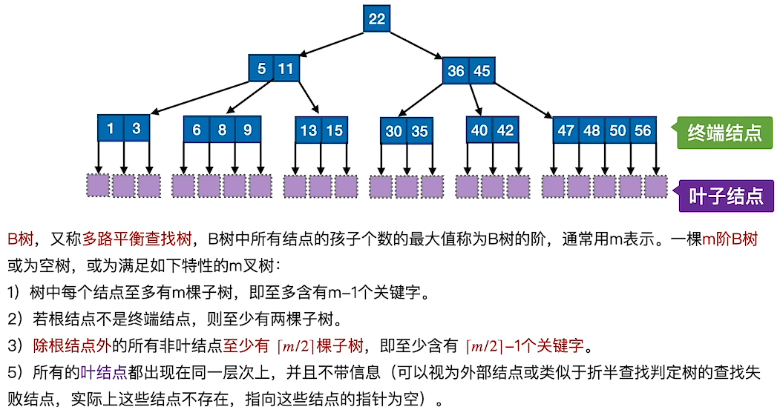
- 注意事项 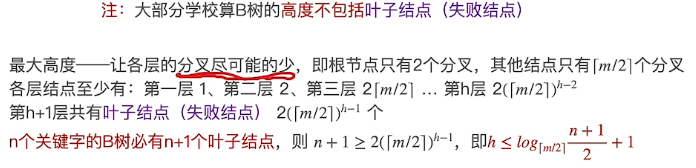
特性 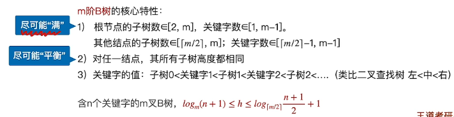
插入
- 通过“查找”确定插入位置(一定是在终端结点)
- 若插入后结点关键字个数未超过上限，则无需做其他处理
- 若插入后关键字个数超过上限，则需要将当前结点的中间元素放到父节点中，当前结点分裂为两个部分;该操作会导致父节点关键字个数+1，若父节点关键字个数也超过了上限，则需要再向上分裂;根节点的分裂会导致 B 树高度+1。
删除
非终端结点关键字
- 用其直接前驱或直接后继替代其位置，转化为对“终端结点”的删除
- 直接前驱：当前关键字左边指针所指子树中“最右下”的元素
- 直接后继：当前关键字右边指针所指子树中“最左下”的元素
终端结点关键字
删除后结点关键字个数未低于下限，无需任何处理
低于下限
- 右兄弟够借，则用当前结点的后继、后继的后继依次顶替空缺
- 左兄弟够借，则用当前结点的前驱、前驱的前驱依次顶替空缺
- 左(右)兄弟都不够借，则需要与父结点内的关键字、左(右)兄弟进行合并合并后导致父节点关键宇数量-1，可能需要继续合并。
7. 散列表的检索
概念
- 散列表、散列函数 H(key)、同义词、冲突
- 装填因子 a=表中记录个数/散列表表长
常见散列函数
除留余数法
- H(key) = key % p，p 是不大于表长的质数
直接定址法
- H(key) = key 或 H(key) = a*key + b
数字分析法
- 选取数码分布较为均匀的若干位作为散列地址
平方取中法
- 取关键字的平方值的中间几位作为散列地址
冲突的处理
拉链法（链地址法）
- 同义词串成一个链表
开放定址法
线性探测法
- di = 0, 1, 2, 3, ..., m-1
平方探测法
- di = 02,12,-12, 2^2, -2^2 ...
伪随机序列法
- di = 一个伪随机序列
再散列法
- 准备多个散列函数，一个发生冲突了就用下一个
查找效率
- 取决于 散列函数、处理冲突的方法、装填因子 a
8. 查找算法的分析及应用
顺序查找
算法实现
- 从头到 jio（或者从 jio 到头）挨个找
- 适用于顺序表、链表，表中元素有序无序都 OK
- 可在 0 号位置存“哨兵”，从尾部向头部挨个查找优点:循环时无需判断下标是否越界
优化
若表中元素有序
当前关键字大于(或小于) 目标关键字时，查找失败
优点：查找失败时 ASL 更少
查找判定树
- 成功结点的关键字对比次数=结点所在层数
- 失败结点的关键字对比次数=其父节点所在层数
若各个关键字被查概率不同
- 可按被查概率降序排列
- 优点:查找成功时 ASL 更少
时间复杂度
折半查找
适用范围
- 只适用于有序的顺序表
算法思想
- 在[low, high] 之间找目标关键字，每次检查 mid=(low+high)/2
- 根据 mid 所指元素与目标关键字的大小调整 low 或 high，不断缩小 low 和 high 的范围
- 若 low>high 则查找失败
判定树
构造
- 由 mid 所指元素将原有元素分割到左右子树中
- Key：右子树结点数-左子树结点树=0 或 1
- 子主题 3
特性
- 折半查找的判定树是平衡的二叉排序树（左<中<右）
- 折半查找判定树，只有最下面一层是不满的
- 若查找表有 n 个关键字，则失败结点有 n+1 个
- （不包含失败结点）
时间复杂度
分块查找
又称“索引顺序查找”，数据分块存储，块内无序、块间有序
算法思想
- 索引表中记录每个分块的最大关键字、分块的区间
- 先查索引表（顺序或折半）、再对分块内进行顺序查找
ASL
ASL=查索引表的平均查找长度+查分块的平均查找长度
设 n 个记录，均匀分为 b 块，每块 s 个记录
- 顺序查找索引表
- 折半查找索引表
易错点
- 对索引表进行折半查找时，若索引表中不包含目标关键字则折半查找最终停在 low>high，要在 low 所指分块中查找
第十章 排序
1. 排序的基本概念
将各元素按关键字递增/或递减顺序重新排列
评价指标
稳定性
- 关键字相同的元素经过排序后相对顺序是否会改变
时间复杂度、空间复杂度
分类
内部排序
- 数据都在内存中
外部排序
- 数据太多，无法全部放入内存
2. 插入排序（直接插入排序、折半插入排序、希尔排序）
插入排序
算法思想：每次将一个待排序的记录按其关键字大小插入到前面已排好序的子序列中，直到全部记录插入完成。
直接插入排序
- 顺序查找找到插入的位置，适用于顺序表、链表
折半插入排序
- 折半查找找到应插入的位置，仅适用于顺序表
- 注意：一直到 low>high 时才停止折半查找。当 mid 所指元素等于当前元素时，应继续令 low=mid+1，以保证“稳定性”。最终应将当前元素插入到 low 所指位置 (即 high+1)
性能
空间复杂度
- O(1)
时间复杂度
最好
- 原本有序 O(n)
最坏
- 原本逆序 O(n^2)
平均
- O(n^2)
稳定性
- 稳定
希尔排序
先将待排序表分割成若干形如 L[i,i+ d,i+ 2d,...,i + kd]的“特殊”子表，对各个子表分别进行直接插入排序。缩小增量 d，重复上述过程，直到 d=1 为止。
性能
空间复杂度
- O(1)
时间复杂度
- 未知，但优于直接插入排序
稳定性
- 不稳定
适用性
- 仅可用于顺序表
高频题型：给出增量序列，分析每一趟排序后的状态
3. 选择排序（简单选择排序、堆排序）
简单选择排序
算法原理
- 每一趟在待排序元素中选取关键字最小的元素加入有序子序列
- 必须进行总共 n-1 趟处理
性能
空间复杂度
- O(1)
时间复杂度
- O(n^2)
稳定性
- 不稳定
适用性
- 顺序表、链表都可以
堆排序
堆
顺序存储的“完全二叉树”
- 结点 i 的左孩子是 2i；右孩子是 2i+1；父节点是 i/2
- 编号<=n/2 的结点都是分支结点
大根堆（根>=左、右）；小根堆（根<=左、右）
算法思想 （以大根堆为例）
建堆
- ① 编号<=n/2 的所有结点依次“下坠”调整（自底向上处理各分支节点）
- ② 调整规则：小元素逐层“下坠”（与关键字更大的孩子交换）
排序
- ③ 将堆顶元素加入有序子序列（堆顶元素与堆底元素交换）
- ④ 堆底元素换到堆顶后，需要进行“下坠”调整，恢复“大根堆”的特性
- 上述过程重复 n-1 趟
特性
空间复杂度
- O(1)
时间复杂度
- 建堆 O(n)、排序 O(nlog n)；总的时间复杂度=O(nlog n)
稳定性
- 不稳定
基于大根堆的堆排序得到“递增序列”，基于小根堆的堆排序得到“递减序列”
插入
- 新元素放到表尾（堆底）
- 根据大/小根堆的要求，新元素不断“上升”，直到无法继续上升为止
删除
- 被删除元素用表尾（堆底）元素替代
- 根据大/小根堆的要求，替代元素不断“下坠”，直到无法继续下坠为止
关键字对比次数
- 每次“上升”调整只需对比关键字 1 次
- 每次“下坠”调整可能需要对比关键字 2 次，也可能只需对比 1 次
基本次数
- i 的左孩子——2i i 的右孩子——2i+1 i 的父节点——[i/2]
4. 交换排序（冒泡排序、快速排序）
冒泡排序
算法原理
- 从后往前(或从前往后) 两两比较相邻元素的值，若为逆序，则交换它们直到序列比较完。称这样过程为“一趟”冒泡排序。最多只需 n-1 趟排序
- 每一趟排序都可以使一个元素的移动到最终位置，已经确定最终位置的元素在之后的处理中无需再对比
- 如果某一趟排序过程中未发生“交换”，则算法可提前结束
性能
空间复杂度
- 0(1)
- 稳定
- 顺序表、链表都可以
时间复杂度
最好 O(n)
- 有序
最差 O(n^2)
- 逆序
平均 O(n^2)
稳定性
- 稳定
适用性
- 顺序表、链表都可以
快速排序
算法表现主要取决于递归深度，若每次“划分”越均匀，则递归深度越低“划分”越不均匀，递归深度越深
性能
空间复杂度
最好
- O(n)
最坏
- O(log n)
时间复杂度
最好
O(n^2)
- 每次划分很平均
最坏
O(n log n)
- 原本正序或逆序
平均
- O(n log n)
稳定性
- 不稳定
5. 二路归并排序
Merge（归并）
- 把两个或多个有序的子序列合并为一个
- 2 路归并——二合一
- k 路归并——k 合一
归并排序算法
- ① 若 low>high，则将序列分从中间 mid=(low+high)/2 分开
- ② 对左半部分[low,mid]递归地进行归并排序
- ③ 对右半部分[mid+1,high]递归地进行归并排序
- ④ 将左右两个有序子序列 Merge 为一个
性能
空间复杂度
- O(n)
时间复杂度
- O(nlog n)
稳定性
- 稳定的
6. 基数排序
算法思想
- 将整个关键字拆分为 d 位(或“组”)
- 按照各个 关键字位 权重递增的次序(如:个、十、百)，做 d “分配”和“收集”若当前处理的 关键字位可能取得 r 个值，则需要建立 r 个队列
- 分配:顺序扫描各个元素，根据当前处理的关键字位，将元素插入相应队列。一趟分配耗时 O(n)
- 收集:把各个队列中的结点依次出队并链接。一趟收集耗时 O(r)
性能
空间复杂度
- 0(r)
时间复杂度
- 0(d(n+r))
稳定性
- 稳
擅长处理
- ① 数据元素的关键字可以方便地拆分为 d 组，且 d 较小
- ② 每组关键字的取值范围不大，即 r 较小
- ③ 数据元素个数 n 较大
7. 各种内部排序算法的比较
- 直接选择排序：平均时间复杂度为 O(n^2)，空间复杂度为 O(1)，不稳定。
- 堆排序：平均时间复杂度为 O(nlogn)，空间复杂度为 O(1)，不稳定。
- 直接插入排序：最好情况下的时间复杂度为 O(n)，平均时间复杂度为 O(n^2)，空间复杂度为 O(1)，稳定。
- 希尔排序：对于较大规模的排序可以达到较高的效率，但目前未得出其精确的渐进时间，不稳定。
- 冒泡排序：最好情况下的时间复杂度为 O(n)，平均时间复杂度为 O(n^2)，空间复杂度为 O(1)，稳定。
- 快速排序：平均性能可以达到 O(nlogn)，在实际应用中常常优于其他排序算法，不稳定。
- 归并排序：最好，最坏和平均时间复杂度均为 O(nlogn)，空间复杂度为 O(n)，稳定。
- 基数排序：适用于关键字位数较少且可以分解的情况。
8. 内部排序算法的应用
- 直接选择排序和直接插入排序：当元素数目较小（n≤50）时，可以采用这两种排序算法。由于直接插入排序所需的记录移动次数较简单选择排序多，因此当记录本身信息量较大时，使用简单选择排序较好。
- 冒泡排序和直接插入排序：如果待排序序列的初始状态已经基本有序，那么这两种排序算法是比较适合的。
- 快速排序，堆排序和归并排序：当待排序的序列数据规模 n 较大时，应该采用这些时间复杂度为 O(nlogn)的排序方法。
- 基数排序：当待排序的序列数据规模较大，且记录的关键字位数较少且可以分解时，采用基数排序比较好。
实现 f 向右下旋转，p 向右上旋转：
其中 f 是爹，p 为左孩子，gf 为 f 他爹 ①f->lchild = p->rchild; ②p->rchild = f; ③gf->lchild/rchild = p;
实现 f 向左下旋转，p 向左上旋转：
①f->rchild = p->lchild;2 ②p->lchild = f; ③gf->lchild/rchild =p;
完整思维导图